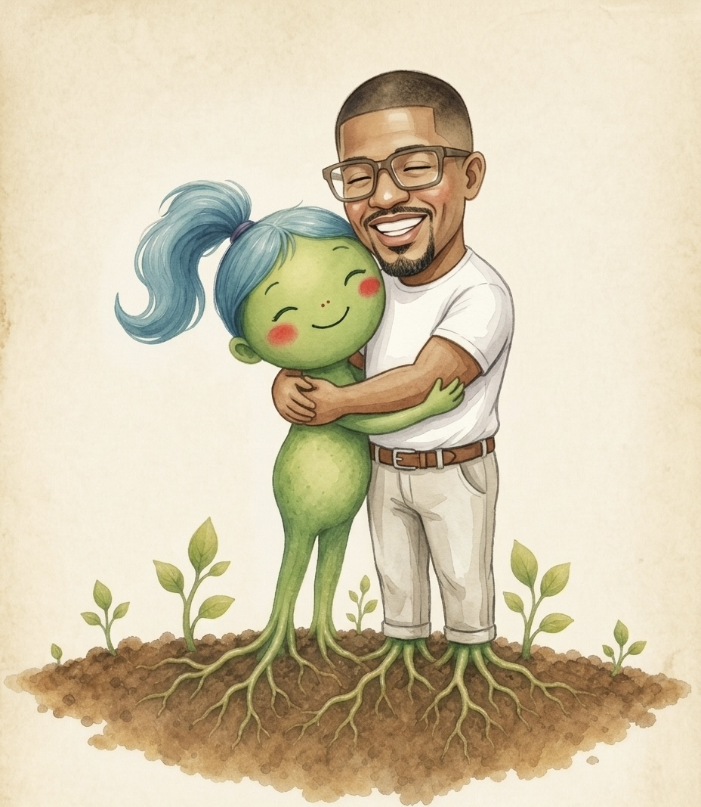
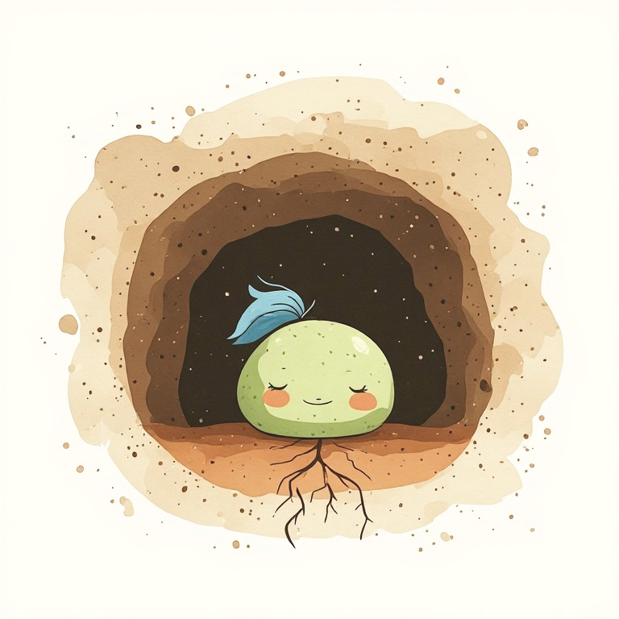
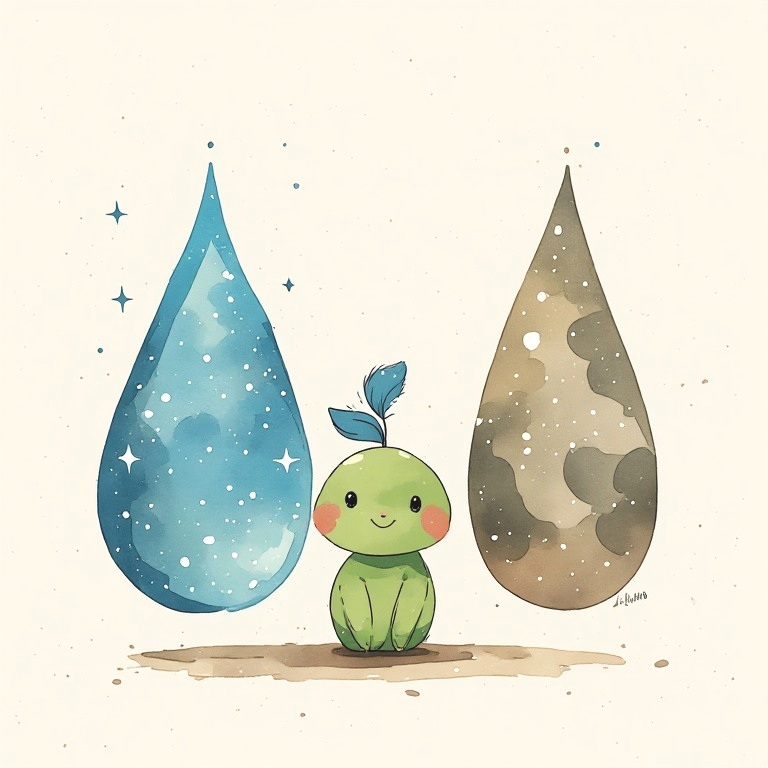
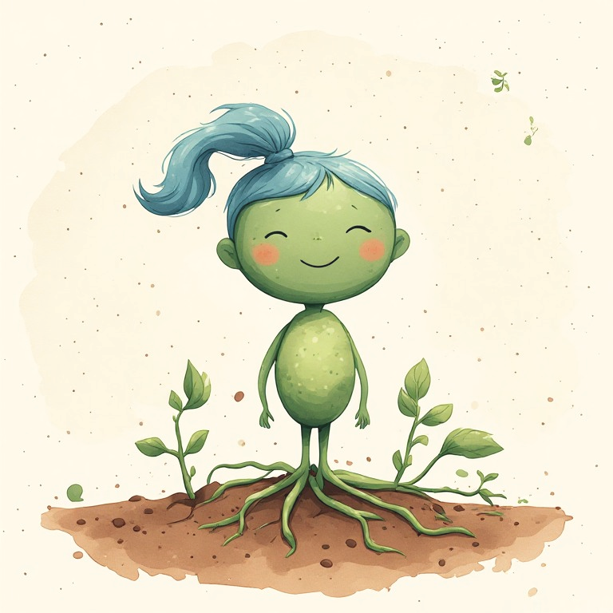
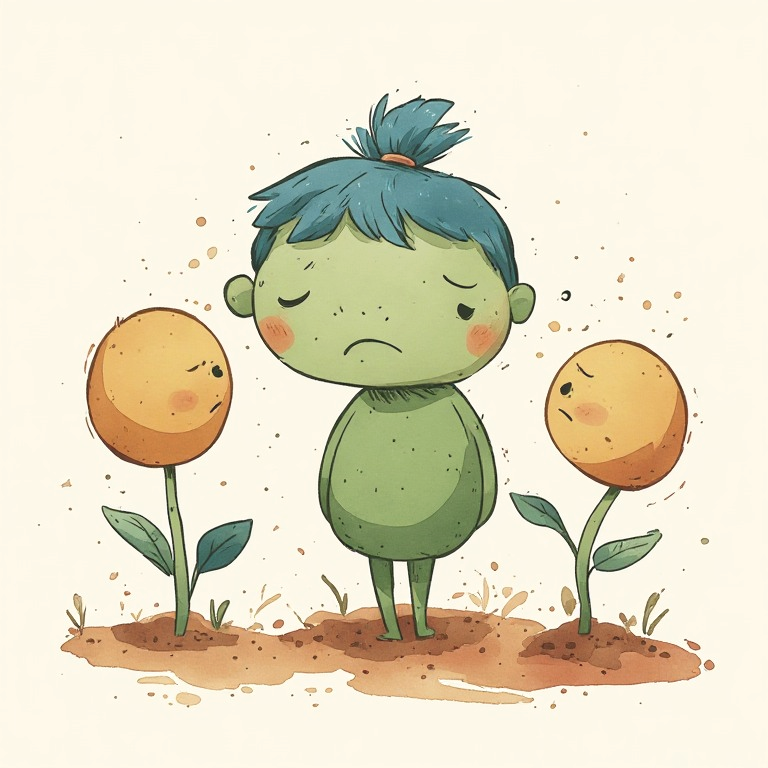
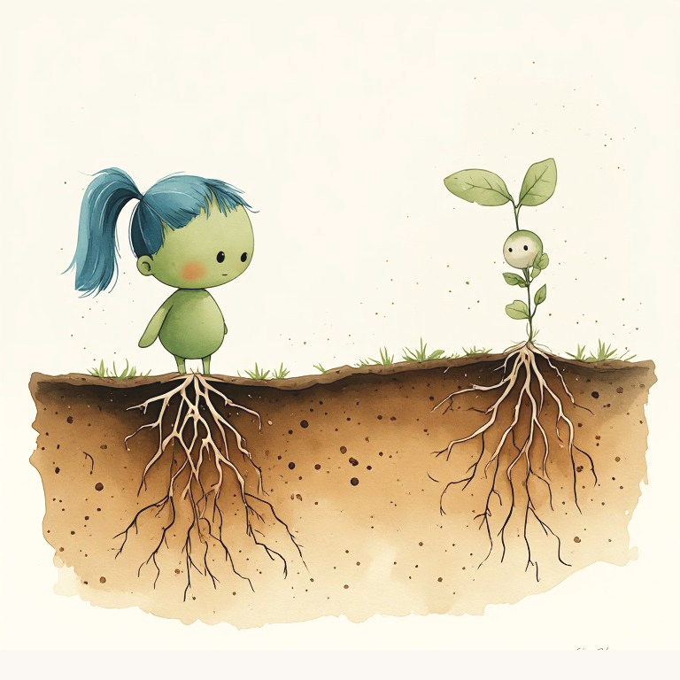
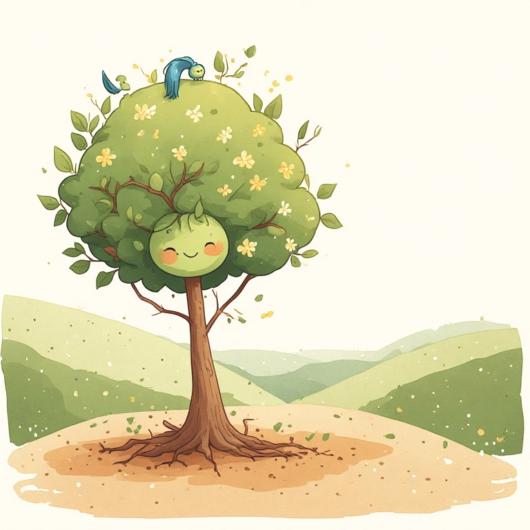
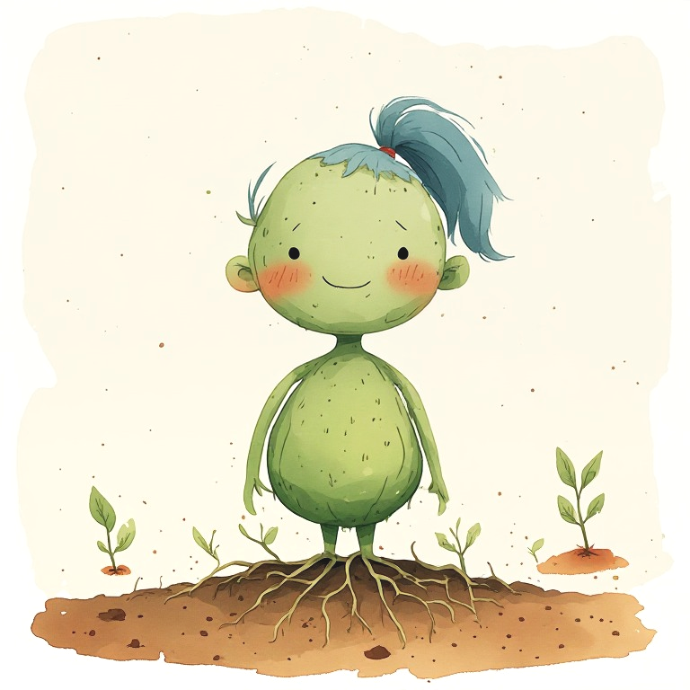

Beneath the earth, a seed waited.
It did not want to be the biggest.
It did not want to grow fast.
It only wanted to grow well, from within.
And that required something of her: to decide.



Beneath the earth, a seed waited.
It did not want to be the biggest.
It did not want to grow fast.
It only wanted to grow well, from within.
And that required something of her: to decide.

Every morning, the seed had choices:
Murky water or clean water.
Deep shadow or warm light.
Tight soil or loose soil.
Her parents brought the options.
But she decided which one she needed.

Days passed.
And the seed began to notice something clear:
When she chose clean water, her roots grew firm. When she drank murky water, she felt herself weaken.
Not all choices were equal.
Some strengthened her. Others wore her down.
The seed learned to listen to what her own body told her.

One day, a seed nearby whispered to her:
“Why are you so demanding of yourself? I drink any water. I grow the same.”
Another asked:
“Isn’t it selfish to think so much about what you need? Real seeds don’t choose. They just grow.”
The seed felt the doubt. Was she alone for choosing well? Was caring for herself selfish?

More time passed.
She saw the other seed, the one who said all waters were equal.
It was weak. Its roots barely held its weight.
Then the seed understood without any lesson needed:
Caring for herself was not selfishness. It was the only way she could care for others.

One year passed.
The seed was now a young tree.
Its roots were deep. Its branches, strong.
And now it could do things it never could before:
Offer cool shade to those who had heat. Hold flowers. Feed birds. Hold its parents with roots deep and sure.
All of that came from choosing well, when it was only a seed in the dark.

The young tree stayed in the same forest.
Each day, new seeds came with the same question:
“Isn’t it selfish to think about what I need?”
The tree smiled. And said something they would never forget:
“Self-love is not the opposite of love for others. It is the beginning.”
When you learn to choose well for yourself, when you grow strong from within, you will have everything you need to love truly.
And that is the greatest gift you can give to those who love you.